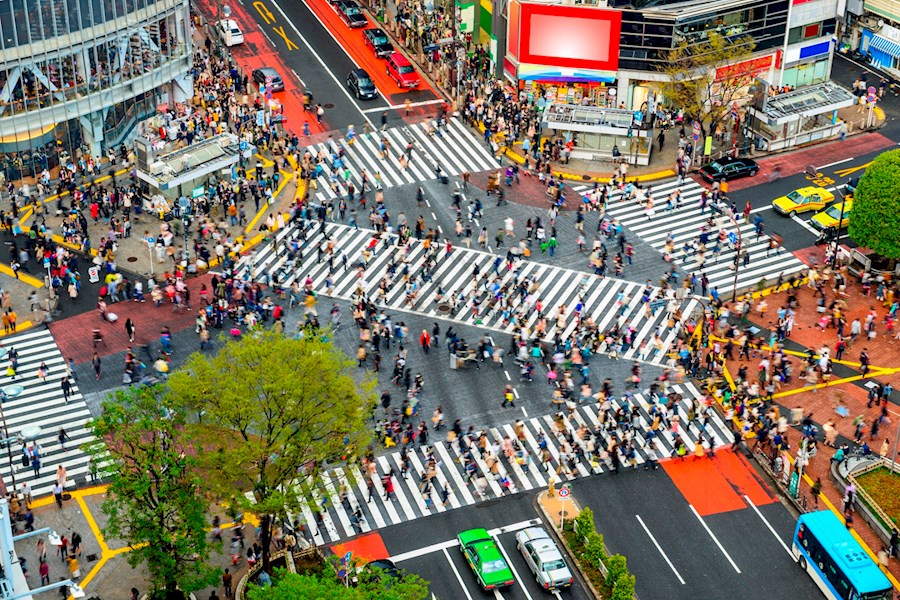
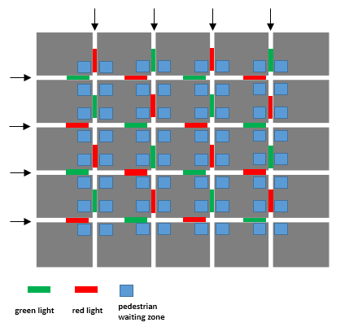
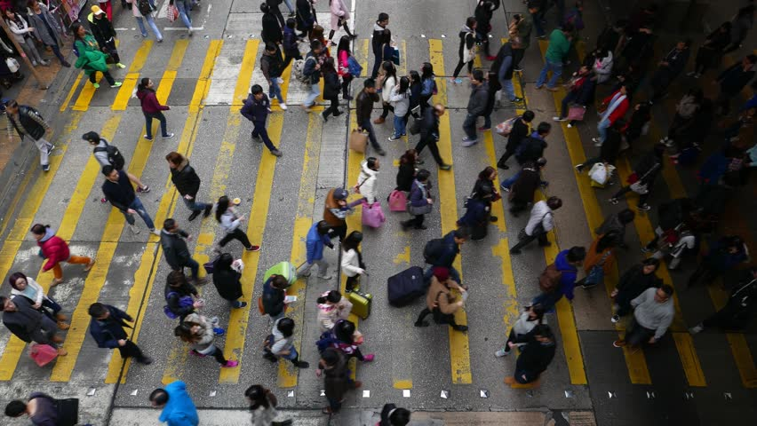

Research on Pedestrian Movement Modelling
Summary
|  |
|
Contributions
A Macroscopic Model for pedestrian flows around the intersection
 |
A novel mathematical model consisting of several logic constraints is developed to describe the pedestrian flow in the urban traffic network and its dynamics are captured by the hopping rule, which depicts the changing capacity of each time interval from one waiting zone to another.
Pedestrian clearance at the end of each GREEN time interval is guaranteed in our model.
An integrated model for pedestrian-vehicle mixed-flow networks
|  |
The signalized vehicle model described in Heterogeneous Urban Traffic System is integrated with the macroscopic pedestrian hopping model in network size, and the integrated model is formulated as a mixed-interger linear programming problem. The potential impacts to the vehicle traffic flows by the pedestrian movement are clearly studied.
A macroscopic model for bidirectional pedetrian flows on crosswalks
|  |
By incorporating bidirectional effects into a CTM model, an improved macroscopic pedestrian model capable of describing interactions between counterflows in a crosswalk is developed to capture the bidirectional pedestrian streams.
Reference
Y. Zhang, R. Su, K. Gao and Y. Zhang. “A pedestrian hopping model and traffic light scheduling for pedestrian-vehicle mixed-flow networks.” arXiv, 2017.
Y. Zhang, R. Su, K. Gao, Y. Zhang. Traffic Light Scheduling for Pedestrians and Vehicles. 2017 IEEE Conference on Control Technology and Applications, Kohala Coast. 2017.